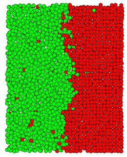
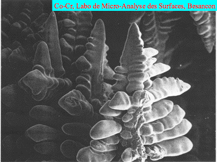
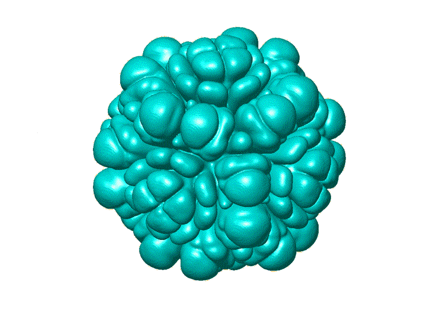

Modelization of crystal growth in undercooled melts
| From atoms... |
...to dendrites |
|  |
 |
The
solidification of a pure undercooled melt is one of the simplest
methods to form dendritic crystals and to investigate their growth
behavior and morphology under well-controlled conditions. The goal of
the present work is to model dendritic growth fully quantitatively by
linking atomistic and phase-field simulations. We use as input of the
phase-field model the anisotropic capillary and kinetics properties of
the Ni solid-liquid interface that have been predicted by Molecular
Dynamics (MD) simulations. This allows us to make quantitative
predictions of morphological development that can be directly compared
with experiments.
 |
 |
| High anisotropy |
Low anisotropy |
A detailled account of this research may be found in the following
article :
"Linking phase-field and atomistic
simulations to model dendritic solidification in highly undercooled
melts" (2002).
A movie of the dendritic growth is shown here (animated GIF, 890 kb).
For this research, I have collaborated with Dr.
Mathis Plapp from Ecole Polytechnique (Palaiseau, France).